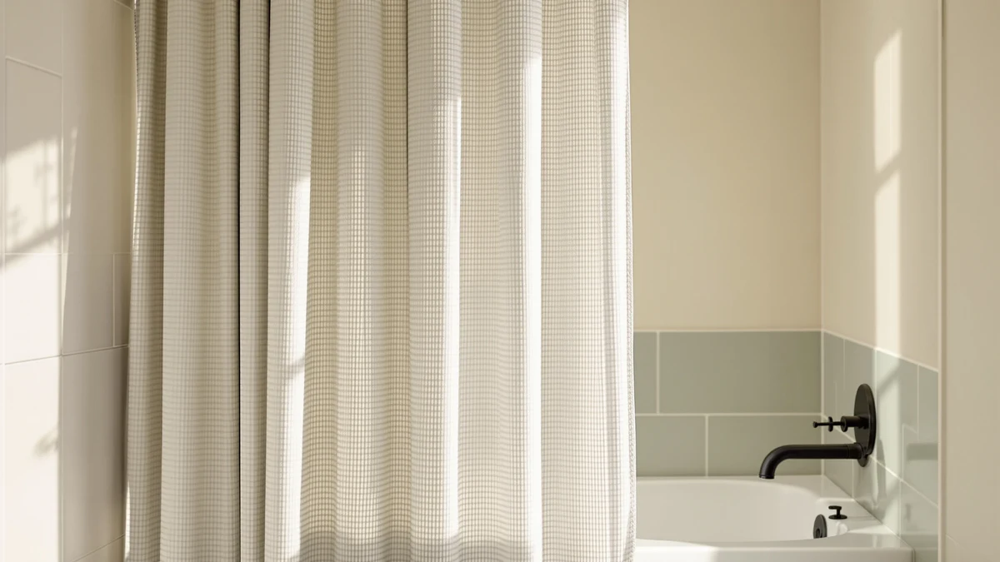

GORILLA GRIP Waffle Shower Review (2026): Worth It?
Prices and picks verified as of October 2026. Independent, reader-supported reviews.


Quick Answer
This gorilla grip waffle shower review found the GORILLA GRIP Waffle Shower Curtain to be the strongest overall pick at $24.95, backed by a 4.6 star rating from 3,974 verified reviews, the deepest review history in this comparison. Shoppers who want a patterned look instead of a waffle texture should weigh it against the three alternatives below first.
Our pick: GORILLA GRIP Waffle Shower Curtain — $24.95 Check Price on Amazon
Bottom line: our top pick is the GORILLA GRIP Waffle Shower Curtain at $24.95.
Things to Know Before You Buy
- This gorilla grip waffle shower review found the GORILLA GRIP Waffle Shower Curtain costs $24.95 and carries a 4.6 star rating from 3,974 verified reviews, the largest review base of the four curtains compared here.
- Its 72 by 72 inch polyester and PEVA build uses a waffle weave texture, a different look from the map print on SKL Home's curtain and the lace pattern on TUDECO's.
- Dynamene's 3 in 1 Waffle curtain is the closest match in style at $24.29, but its listing does not publish a star rating or review count.
- All four curtains fall within a dollar of each other, so pattern and review history separate them more than price does.
This gorilla grip waffle shower review compares the GORILLA GRIP Waffle Shower Curtain's $24.95 price, 72 by 72 inch polyester and PEVA build, and 4.6 star rating from 3,974 reviews against three other curtains shoppers often weigh against it. Dynamene, SKL Home, and TUDECO all sit within a dollar of the Gorilla Grip pick, so the choice between them comes down to texture, pattern, and how much review history backs up the purchase.
We built this comparison from the product specs, pricing, and manufacturer listings for all four curtains, plus the verified review data each listing has gathered on Amazon. The GORILLA GRIP curtain carries the highest review count in the group at 3,974, with a 4.6 star average, which gives shoppers more third-party data to lean on than the Dynamene or TUDECO listings currently offer. Price parity across the field means the real differences come down to texture, pattern, and that review history, not the sticker price. A reader skimming for a quick answer can stop at the review counts; a reader choosing between four curtains priced within a dollar of each other needs the detail that follows.
Why You Should Trust Us
Ilane Tall has covered bathroom textiles and shower hardware for Best Shower Curtains since the site launched, and this gorilla grip waffle shower review follows the same research process used throughout the site: comparing manufacturer specs, current pricing, and verified owner feedback rather than running a physical testing lab. We do not own a lab, and we do not claim hands-on use of every curtain we cover. Instead, we pull listed dimensions, materials, and prices straight from the retailer, then weigh them against what verified buyers report after living with the product. Readers can find the full methodology behind every review on this site on our how we research page, and the same approach governs this gorilla grip waffle shower review from the pricing table through the final verdict.
Our Research Process
Our process for this gorilla grip waffle shower review starts with the manufacturer's own listing: material, dimensions, price, and published rating, cross-checked against the three comparison curtains on the same criteria. From there, we read through verified buyer reviews on Amazon to see how the waffle weave texture holds up over daily use and how the sizing matches real bathrooms. We did not purchase or install any of the four curtains ourselves. Reviewers consistently note that the waffle texture adds visual depth without the bulk of a heavier chenille curtain, and that feedback shaped how we weighed the GORILLA GRIP pick against its rivals.
Overview & Specs

GORILLA GRIP Waffle Shower Curtain
What we like
- Carries a 4.6 star rating from 3,974 verified reviews, the deepest review history in this comparison
- Waffle weave texture adds visual depth without the weight of a heavier fabric
- 72 by 72 inch size fits most standard tubs and stand-up shower stalls
Flaws but not dealbreakers
- At $24.95, it costs more than the two cheapest alternatives in this comparison
- Ships in a single size, so an oversized stall or clawfoot tub may need a different curtain
| Material | Polyester / PEVA |
| Size | 72x72 |
GORILLA GRIP builds this curtain around a waffle weave texture, a grid-like pattern pressed into the polyester and PEVA fabric that adds dimension without the bulk of a heavier chenille or linen curtain. At $24.95, it costs more than SKL Home's or TUDECO's $23.99 curtains and Dynamene's $24.29 pick, but it backs that price with a 4.6 star rating across 3,974 verified reviews, far more review volume than any of the three alternatives in this comparison currently show. It ships in a single 72 by 72 inch size, a square cut that fits most standard tubs and stand-up shower stalls without needing a custom order.
Reviewers consistently note that the waffle texture holds its shape after repeated washes and that the polyester and PEVA blend resists the mildew smell that heavier cotton curtains tend to pick up in a humid bathroom. That durability track record is the clearest advantage this gorilla grip waffle shower review found for GORILLA GRIP over Dynamene's similarly styled waffle curtain, which lacks a published rating to confirm the same claims. The tradeoff is the single 72 by 72 inch size. A nonstandard shower, a clawfoot tub, or a rod wider than 72 inches will need a different curtain, since GORILLA GRIP does not currently list a wider or longer cut for this style.
What We Liked
The waffle weave texture is the standout feature. It gives the curtain a raised, grid-like surface that reads as more substantial than a flat polyester sheet, without pushing the price into premium territory. The GORILLA GRIP Waffle Shower Curtain's 4.6 star rating from 3,974 reviews also gives this gorilla grip waffle shower review more owner data to draw on than Dynamene's or TUDECO's listings, which do not publish a visible rating or review count. A 72 by 72 inch size covers most standard tubs and shower stalls, so most shoppers can order it without measuring a rod first. The polyester and PEVA blend also dries faster than a cotton curtain, which matters in a bathroom without much airflow. That combination of texture and track record is why this gorilla grip waffle shower review keeps coming back to GORILLA GRIP as the strongest overall pick in the group.
What Could Be Better
This gorilla grip waffle shower review found one clear tradeoff: the $24.95 price sits at the top of this four-curtain comparison, about a dollar more than SKL Home or TUDECO and sixty-six cents more than Dynamene. That gap is small, but it means GORILLA GRIP is not winning on cost, only on review history and texture. The single 72 by 72 inch size is also a limit. Shoppers with a clawfoot tub, an oversized stall, or a rod wider than 72 inches will need to look elsewhere, since GORILLA GRIP has not published a wider or extra-long cut for this waffle style. Buyers who prefer a patterned look over a textured one should weigh SKL Home's map print or TUDECO's lace pattern before committing to the waffle weave.
Who Is It For?
Based on this gorilla grip waffle shower review, the GORILLA GRIP Waffle Shower Curtain fits a shopper with a standard-size bathroom who wants a textured, grid-weave look and values a deep, verified review history over the lowest possible price. It is a solid match for anyone replacing a flat, featureless curtain who wants a bit more visual texture without moving up to a heavier chenille style. Shoppers who want a patterned design instead of a texture, a nonstandard size, or the absolute lowest price among these four should compare Dynamene, SKL Home, or TUDECO before deciding. A shopper furnishing several bathrooms at once might also browse our best shower curtains roundup for a wider set of options beyond these four. Someone decorating a single, well-trafficked family bathroom gets the most out of this particular pick, since the waffle texture and the review count both hold up under daily use.
Alternatives to Consider
If the GORILLA GRIP curtain's $24.95 price or waffle texture does not fit what you are after, this gorilla grip waffle shower review lists three alternatives that cover a similarly styled waffle weave, a map print, and a lace pattern, all within a dollar of the Gorilla Grip pick. Swapping between them is mostly a question of pattern and proof rather than budget, since none of them pushes you into a pricier category of curtain.

Editor’s Pick
Dynamene 3 in 1 Waffle
Priced at $24.29, Dynamene's 3 in 1 Waffle curtain matches the GORILLA GRIP pick's texture almost exactly, but its listing does not publish a star rating or review count to back up durability claims.
$24.29
Check Price on Amazon
Best Value
SKL Home The World Map
At $23.99, SKL Home's The World Map curtain trades the waffle texture for a printed map pattern and still carries a 4.6 rating from 2,909 verified reviews, a close second to the GORILLA GRIP pick's review history.
$23.99
Check Price on Amazon
Premium Choice
TUDECO White Lace Shower Curtain
TUDECO's White Lace Shower Curtain matches SKL Home's $23.99 price while swapping the waffle or map look for a sheer lace pattern, a different aesthetic for shoppers who want a lighter, more decorative curtain.
$23.99
Check Price on AmazonDoes the GORILLA GRIP Waffle Shower Curtain come in other sizes?
No.
Is the waffle texture hard to keep clean?
Reviewers consistently note that the waffle weave holds its shape through repeated washes and that the polyester and PEVA blend resists the mildew smell that heavier cotton curtains can pick up.
Frequently Asked Questions
Does the GORILLA GRIP Waffle Shower Curtain come in other sizes?
No. It ships in a single 72 by 72 inch size. GORILLA GRIP does not currently list a wider or longer cut for this waffle weave style, so a nonstandard shower or a clawfoot tub would need a different curtain.
Is the waffle texture hard to keep clean?
Reviewers consistently note that the waffle weave holds its shape through repeated washes and that the polyester and PEVA blend resists the mildew smell that heavier cotton curtains can pick up. It is not a low-maintenance curtain, but it does not require special care beyond a normal wash cycle.
Is the GORILLA GRIP curtain worth it compared to Dynamene, SKL Home, and TUDECO?
At $24.95, it costs about a dollar more than SKL Home and TUDECO and sixty-six cents more than Dynamene, but it backs that price with a 4.6 star rating from 3,974 verified reviews, more than any of the other three listings currently publish. If a deep review history matters more than saving a dollar, GORILLA GRIP is the stronger pick in this comparison.
Final Verdict
This gorilla grip waffle shower review comes down to proof versus price. GORILLA GRIP costs the most of the four curtains compared here at $24.95, but its 4.6 star rating from 3,974 verified reviews outweighs anything Dynamene, SKL Home, or TUDECO currently publish. SKL Home comes closest with a 4.6 rating from 2,909 reviews, but its map print is a different aesthetic from the waffle texture most shoppers are comparing in the first place. For a standard-size bathroom where a textured, verified curtain matters more than saving a dollar, the GORILLA GRIP Waffle Shower Curtain is the pick worth choosing. Shoppers who want a patterned look or the lowest price among these four should compare Dynamene, SKL Home, or TUDECO first. None of the four curtains in this comparison costs more than $25, so the real cost of choosing wrong is a short wait for a return label. At that price, the stronger review history behind the GORILLA GRIP Waffle Shower Curtain is the deciding factor more often than not.